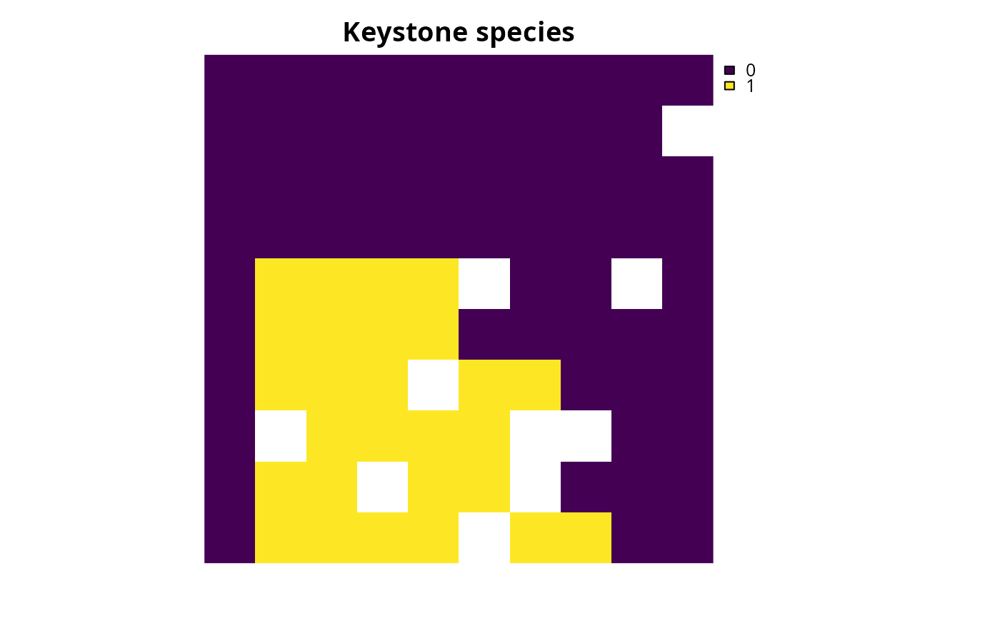
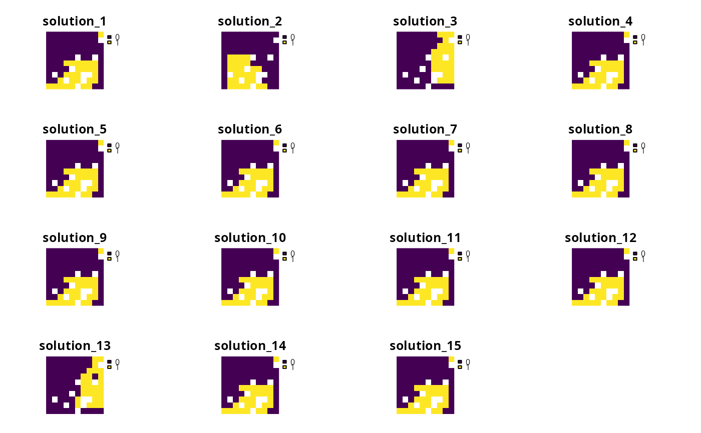

Add a weighted sum approach for multi-objective optimization to a
multi-objective conservation planning problem (Jaimes et al. 2009).
Broadly speaking, this approach involves combining each problem() in a
multi_problem() object together based on weights, wherein
those associated with a greater weight value exert a greater influence
on the optimization process.
Arguments
- x
multi_problem()object.- weights
numericvector or matrix containing the weights for eachproblem()inx. A vector can be used to specify a set of values for generating a single solution, wherein each value corresponds to a differentproblem()inx. Alternatively, a matrix can be used to specify multiple sets of values for generating multiple solutions, wherein each column corresponds to a differentproblem()inxand each row corresponds to a different solution. With theweightsvalues, greater values indicate greater importance. Also, aweightsvalue of 0 means that a particularproblem()inxhas no influence over the optimization process.- verbose
logicalshould progress on generating multiple solutions be displayed? Defaults toTRUE.
Value
An updated multi_problem() object with the approach
added to it.
Details
This multi-objective optimization approach is most useful when considering
a small number of objectives that have the same units (e.g., they have the
same objective function and similar cost and feature data)
(Neubert et al. 2025).
Briefly, this approach involves transforming multiple
objectives into a new single objective – based on a weighted
linear combination – and then generating a solution based on this new
objective.
Although this approach has widespread usage (Williams and Kendall 2017),
small differences in the weight values can cause unexpectedly large
differences to solutions (Das and Dennis 1997).
This is because – when using this approach – the overall influence that an
objective has on a solution depends on its weight value and also the
scale (in other words, range) of the metric used to evaluate how well
a solution achieves the objective (termed objective value).
For example, the minimum shortfall objective function
(add_min_shortfall_objective()) often has relatively small
objective values (e.g., values may range between zero and the number of
features), and the minimum set objective function
(add_min_set_objective() can have much higher values depending
on the cost data (e.g., values may range between zero and 10,000 depending
on the cost data). Due to these differences in scale,
a solution generated with these two objectives and equal weight values
will likely fail to balance them equally. As such, when using the weighted
sum approach, practitioners may need to (i) consider a large number of
sets of weights to obtain a diverse set of solutions and (ii) perform
multiple calibration procedures to manually identify weight parameter values
that result in different solutions.
Mathematical formulation
This approach can be expressed mathematically for a set of
objectives associated with the problem() objects in x.
Let \(O\) denote the set of objectives (indexed by \(o\)).
For brevity, we will assume that all of the objectives should ideally be
maximized.
Also, let \(f_o(x)\) denote the objective function for each
objective \(o \in O\), where \(x\) represents all the decision
variables for calculating the objective values (e.g., planning unit selection
status values).
Additionally, let \(w_o\) denote the weight (per
weights) parameter for each objective \(o \in O\).
Furthermore, let \(S\) represent the set (region) of feasible
values for \(x\) based on the constraints for all of the objectives
(e.g., if the first problem in x has locked in constraints and the
second problem has locked out constraints, then \(S\) would
account for both the locked in and locked out constraints).
Given this terminology, the approach involves solving the following
optimization problem.
$$ \mathit{Maximize} \space \sum_{o \in O} \frac{w_o}{\sum_{o \in O} w_o} \times f_o(x) \\ \mathit{subject \space to \space} x \in S $$
By specifying the relative importance of each objective through a particular choice of weights, the optimization process can identify a solution that achieves multiple objectives.
References
Das I and Dennis JE (1997) A closer look at drawbacks of minimizing weighted sums of objectives for Pareto set generation in multicriteria optimization problems. Structural Optimization, 14: 63–69.
Jaimes AL, Saúl ZM, and Coello Coello CA (2009) An introduction to multiobjective optimization techniques in Optimization in Polymer Processing. Eds Gaspar-Cunha A and Covas JA. Nova Science Publishers Inc, New York, United States.
Neubert S, McGowan J, Metcalfe K, Hanson JO, Buenafe KCV, Dabalà A, Dunn DC, Everett JD, Possingham HP, Stelzenmüller V, Estep A, Ervin J, and Richardson AJ (2025) Multiple-use spatial planning for sustainable development and conservation. Trends in Ecology and Evolution, 40: 1126–1142.
Williams PJ and Kendall WL (2017) A guide to multi-objective optimization for ecological problems with an application to cackling goose management. Ecological Modelling, 343: 54-67.
See also
See approaches for an overview of all functions for adding an approach.
Also, see approach_weights_matrix() to automatically create a matrix
for weights.
Other functions for adding multi-objective optimization approaches:
add_hier_approach(),
add_ref_point_approach()
Examples
# \dontrun{
# in this example, we aim to identify a set of planning units that will
# not exceed a particular budget and meet objectives for
# (i) representing species that are important for ecosystem
# functioning (hereafter, keystone species) and (ii) representing species
# that have high social or cultural value (hereafter, iconic species)
# import data
con_cost <- get_sim_pu_raster()
keystone_spp <- get_sim_features()[[1:3]]
iconic_spp <- get_sim_features()[[4:5]]
# define a total conservation budget (30% of total cost)
budget <- terra::global(con_cost, "sum", na.rm = TRUE)[[1]] * 0.3
# define a single-objective problem for the keystone species objective
p1 <-
problem(con_cost, keystone_spp) %>%
add_min_shortfall_objective(budget) %>%
add_relative_targets(0.4) %>%
add_binary_decisions()
# define a single-objective problem for the iconic species objective
p2 <-
problem(con_cost, iconic_spp) %>%
add_min_shortfall_objective(budget) %>%
add_relative_targets(0.45) %>%
add_binary_decisions()
# solve the single-objective problems
s1 <-
p1 %>%
add_default_solver(verbose = FALSE) %>%
solve()
s2 <-
p2 %>%
add_default_solver(verbose = FALSE) %>%
solve()
# plot the solutions to the single-objective problems
plot(s1, main = "Keystone species", axes = FALSE)

plot(s2, main = "Iconic species", axes = FALSE)
 # now create multi-objective problem with equal weights for the objectives
mp1 <-
multi_problem(keystone_obj = p1, iconic_obj = p2) %>%
add_wtd_sum_approach(c(0.5, 0.5), verbose = TRUE) %>%
add_default_solver(verbose = FALSE)
# solve problem
ms1 <- solve(mp1)
# plot solution to multi-objective problem
plot(ms1, main = "Equal weights", axes = FALSE)
# now create multi-objective problem with equal weights for the objectives
mp1 <-
multi_problem(keystone_obj = p1, iconic_obj = p2) %>%
add_wtd_sum_approach(c(0.5, 0.5), verbose = TRUE) %>%
add_default_solver(verbose = FALSE)
# solve problem
ms1 <- solve(mp1)
# plot solution to multi-objective problem
plot(ms1, main = "Equal weights", axes = FALSE)
 # we will now generate multiple solutions based on a matrix
# that contains different combinations of weight values
# create a matrix with weight values for objectives
weights_matrix <- approach_weights_matrix(
n_problems = 2, n_values = 5, include_zero = TRUE
)
# preview weight matrix
head(weights_matrix)
#> [,1] [,2]
#> [1,] 1.00 1.00
#> [2,] 1.00 0.00
#> [3,] 0.00 1.00
#> [4,] 0.50 0.25
#> [5,] 0.75 0.25
#> [6,] 1.00 0.25
# create multi-objective problem using weight matrix
mp2 <-
multi_problem(keystone_obj = p1, iconic_obj = p2) %>%
add_wtd_sum_approach(weights_matrix, verbose = FALSE) %>%
add_default_solver(verbose = FALSE)
# solve multi-objective problem and generate multiple solutions
ms2 <- solve(mp2)
# plot multiple solutions
plot(terra::rast(ms2), axes = FALSE)
# we will now generate multiple solutions based on a matrix
# that contains different combinations of weight values
# create a matrix with weight values for objectives
weights_matrix <- approach_weights_matrix(
n_problems = 2, n_values = 5, include_zero = TRUE
)
# preview weight matrix
head(weights_matrix)
#> [,1] [,2]
#> [1,] 1.00 1.00
#> [2,] 1.00 0.00
#> [3,] 0.00 1.00
#> [4,] 0.50 0.25
#> [5,] 0.75 0.25
#> [6,] 1.00 0.25
# create multi-objective problem using weight matrix
mp2 <-
multi_problem(keystone_obj = p1, iconic_obj = p2) %>%
add_wtd_sum_approach(weights_matrix, verbose = FALSE) %>%
add_default_solver(verbose = FALSE)
# solve multi-objective problem and generate multiple solutions
ms2 <- solve(mp2)
# plot multiple solutions
plot(terra::rast(ms2), axes = FALSE)

# extract objective values for the solutions
obj_matrix <- attributes(ms2)$objective
# preview the objective values
head(obj_matrix)
#> keystone_obj iconic_obj
#> solution_1 0.9421096 0.7490599
#> solution_2 0.8656717 2.0000000
#> solution_3 3.0000000 0.6072101
#> solution_4 0.9421096 0.7490599
#> solution_5 0.9421096 0.7490599
#> solution_6 0.9421096 0.7490599
# plot the objectives values to visualize trade-offs
# (note that smaller values are better because these objectives seek to
# minimize representation shortfalls)
plot(
obj_matrix,
main = "Trade-offs between objectives",
xlab = "Keystone objective (shortfall)",
ylab = "Iconic objective (shortfall)"
)
 # we can see that there are multiple solutions (points) that have
# exactly the same performance for the two objectives (these appear
# as points with slightly thicker borders), and this is a key limitation
# of the weighted sum approach
# }
# we can see that there are multiple solutions (points) that have
# exactly the same performance for the two objectives (these appear
# as points with slightly thicker borders), and this is a key limitation
# of the weighted sum approach
# }